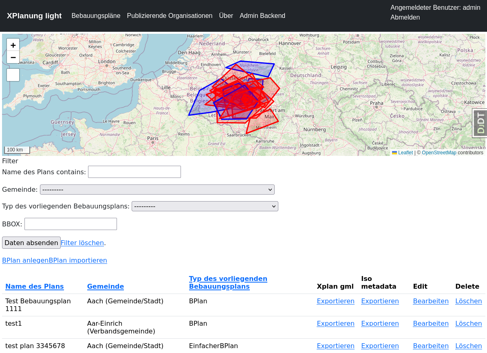

Zusätzliche Funktionen
Import von XPlan-GML Files
Formular und Validator
Für den Import von GML-Dateien bauen wir uns eine spezielles Formular. Dazu schreiben wir eine neue Form-Klasse. Die Klasse wird nicht von einem Model abgeleitet und hat einen eigenen Validator, der in der validators.py abgelegt ist. Der Validator prüft zunächst, ob es sich um eine unterstützte XPlan-GML-Datei handelt. Ausserdem werden die Plichtfelder gecheckt, sowie der AGS. Der muss einer im System vorhandenen Organisation zugeordnet werden können.
komserv2/xplanung_light/forms.py
# ...
from xplanung_light.validators import xplan_content_validator
# ...
class BPlanImportForm(forms.Form):
confirm = forms.BooleanField(label="Vorhandenen Plan überschreiben", initial=False, required=False)
file = forms.FileField(required=True, label="BPlan GML", validators=[xplan_content_validator])
"""
for crispy-forms
"""
def __init__(self, *args, **kwargs):
super(BPlanImportForm, self).__init__(*args, **kwargs)
self.helper = FormHelper()
self.helper.layout = Layout(Fieldset("Bebauungsplan importieren", "file", "confirm"), Submit("submit", "Hochladen"))
komserv2/xplanung_light/validators.py
from django import forms
import xml.etree.ElementTree as ET
from django.contrib.gis.geos import GEOSGeometry
from xplanung_light.models import AdministrativeOrganization
#https://www.tommygeorge.com/blog/validating-content-of-django-file-uploads/
"""
Funktion zur Validierung der zu importierenden XPlan-GML Datei.
Validierungen:
* Datei ist XML
* Namespace ist http://www.xplanung.de/xplangml/6/0 und Element ist XPlanAuszug
* XPlan-Pflichtfelder
* Spezielle Pflichtfelder
"""
def xplan_content_validator(xplan_file):
xml_string = xplan_file.read().decode('UTF-8')
validation_error_messages = []
try:
ET.register_namespace("gml", "http://www.opengis.net/gml/3.2")
root = ET.fromstring(xml_string)
root_element_name = root.tag.__str__()
supported_element_names = ["{http://www.xplanung.de/xplangml/6/0}XPlanAuszug", ]
if root_element_name not in supported_element_names:
validation_error_messages.append("XML-Dokument mit root-Element *" + root_element_name + "* wird nicht unterstützt!")
else:
# check Pflichtfelder
# check zusätzliche Pflichtfelder aus eigenem Standard - nummer, rechtsstand, ...
ns = {
'xplan': 'http://www.xplanung.de/xplangml/6/0',
'gml': 'http://www.opengis.net/gml/3.2',
'xlink': 'http://www.w3.org/1999/xlink',
'xsi': 'http://www.w3.org/2001/XMLSchema-instance',
'wfs': 'http://www.opengis.net/wfs',
'xsd': 'http://www.w3.org/2001/XMLSchema',
}
# check Pflichtfelder aus XPlannung Standard - name, geltungsbereich, gemeinde, planart
mandatory_fields = {
'name': {'xpath': 'gml:featureMember/xplan:BP_Plan/', 'type': 'text', 'xplan_element': 'xplan:name'},
'planart': {'xpath': 'gml:featureMember/xplan:BP_Plan/', 'type': 'text', 'xplan_element': 'xplan:planArt'},
'gemeinde_name': {'xpath': 'gml:featureMember/xplan:BP_Plan/xplan:gemeinde/xplan:XP_Gemeinde/', 'type': 'text', 'xplan_element': 'xplan:gemeindeName'},
'gemeinde_ags': {'xpath': 'gml:featureMember/xplan:BP_Plan/xplan:gemeinde/xplan:XP_Gemeinde/', 'type': 'text', 'xplan_element': 'xplan:ags'},
}
# Auslesen der Information zur Gemeinde - hier wird aktuell von nur einem XP_Gemeinde-Objekt ausgegangen!
gemeinde_ags = "000000000000"
for key, value in mandatory_fields.items():
if value['type'] == 'text':
try:
test = root.find(value['xpath'] + value['xplan_element'], ns).text
if value['xplan_element'] == 'xplan:ags':
if len(test) == 10:
gemeinde_ags = test
else:
raise forms.ValidationError("Die gefundene AGS im Dokument hat keine 10 Stellen - es werden nur 10-stellige AGS akzeptiert!")
except:
validation_error_messages.append("Das Pflichtelement *" + value['xplan_element'] + "* wurde nicht gefunden!")
geltungsbereich_element = root.find("gml:featureMember/xplan:BP_Plan/xplan:raeumlicherGeltungsbereich/gml:MultiSurface", ns)
geltungsbereich_text = ET.tostring(geltungsbereich_element, encoding="utf-8").decode()
# Bauen eines GEOS-Geometrie Objektes aus dem GML
geometry = GEOSGeometry.from_gml(geltungsbereich_text)
# Definition des Koordinatenreferenzsystems
geometry.srid = 25832
# Transformation in WGS84 für die Ablage im System
geometry.transform(4326)
# DEBUG Ausgaben
#print("Name des BPlans: " + name)
#print("Gemeinde des BPlans: " + gemeinde_name)
#print("AGS der Gemeinde: " + gemeinde_ags)
#print("Geltungsbereich: " + geltungsbereich_text)
#print("geometry: " + geometry.wkt)
#0723507001
#print(gemeinde_ags[:2] + " - " + gemeinde_ags[2:5] + " - " + gemeinde_ags[5:7] + " - " + gemeinde_ags[7:10])
# check zusätzliche Pflichtfelder aus eigenem Standard - nummer, rechtsstand, ...
# Zuordnung einer Organisation aus den vorhandenen AdministrativeOrganizations über AGS
try:
orga = AdministrativeOrganization.objects.get(ls=gemeinde_ags[:2], ks=gemeinde_ags[2:5], vs=gemeinde_ags[5:7], gs=gemeinde_ags[7:10])
except:
validation_error_messages.append("Es wurde keine Organisation mit dem AGS *" + gemeinde_ags + "* im System gefunden!")
except:
validation_error_messages.append("XML-Dokument konnte nicht geparsed werden!")
if len(validation_error_messages) > 0:
raise forms.ValidationError(" ".join(validation_error_messages))
Importfunktion
Für die Importfunktion wird ein Verzeichnis helper angelegt.
mkdir komserv2/xplanung_light/helper
Dort erstellen wir eine Datei xplanung.py
komserv2/xplanung_light/helper/xplanung.py
import xml.etree.ElementTree as ET
from django import forms
from django.contrib.gis.geos import GEOSGeometry
from xplanung_light.models import BPlan, AdministrativeOrganization
class XPlanung():
"""Klasse mit Hilfsfunktionen für den Import von XPlan-GML Dokumenten.
"""
xml_string:str
xplan_version = "6.0"
xplan_name:str
xplan_orga:AdministrativeOrganization
def __init__(self, xml_file):
"""Constructor method
"""
self.xml_string = xml_file.read().decode('UTF-8')
def import_bplan(self, overwrite=False):
# for exporting gml with right namespace
ET.register_namespace("gml", "http://www.opengis.net/gml/3.2")
root = ET.fromstring(self.xml_string)
# check for version
#<xplan:XPlanAuszug xmlns:xplan="http://www.xplanung.de/xplangml/6/0" xmlns:gml="http://www.opengis.net/gml/3.2" xmlns:xlink="http://www.w3.org/1999/xlink" xmlns:xsi="http://www.w3.org/2001/XMLSchema-instance" xmlns:wfs="http://www.opengis.net/wfs" xmlns:xsd="http://www.w3.org/2001/XMLSchema" xsi:schemaLocation="http://www.xplanung.de/xplangml/6/0 http://repository.gdi-de.org/schemas/de.xleitstelle.xplanung/6.0/XPlanung-Operationen.xsd" gml:id="GML_080e46d4-9a9f-4f1d-8f3b-f17f79228417">
ns = {
'xplan': 'http://www.xplanung.de/xplangml/6/0',
'gml': 'http://www.opengis.net/gml/3.2',
'xlink': 'http://www.w3.org/1999/xlink',
'xsi': 'http://www.w3.org/2001/XMLSchema-instance',
'wfs': 'http://www.opengis.net/wfs',
'xsd': 'http://www.w3.org/2001/XMLSchema',
}
# Auslesen der Pflichtelemente aus der GML-Datei - Prüfung erfolgte bereits im Formular
name = root.find("gml:featureMember/xplan:BP_Plan/xplan:name", ns).text
planart = root.find("gml:featureMember/xplan:BP_Plan/xplan:planArt", ns).text
geltungsbereich_element = root.find("gml:featureMember/xplan:BP_Plan/xplan:raeumlicherGeltungsbereich/gml:MultiSurface", ns)
geltungsbereich_text = ET.tostring(geltungsbereich_element, encoding="utf-8").decode()
# Bauen eines GEOS-Geometrie Objektes aus dem GML
geometry = GEOSGeometry.from_gml(geltungsbereich_text)
# Definition des Koordinatenreferenzsystems
geometry.srid = 25832
#print(geometry.wkt)
# Transformation in WGS84 für die Ablage im System
geometry.transform(4326)
# Auslesen der Information zur Gemeinde - hier wird aktuell von nur einem XP_Gemeinde-Objekt ausgegangen!
gemeinde_name = root.find("gml:featureMember/xplan:BP_Plan/xplan:gemeinde/xplan:XP_Gemeinde/xplan:gemeindeName", ns).text
gemeinde_ags = root.find("gml:featureMember/xplan:BP_Plan/xplan:gemeinde/xplan:XP_Gemeinde/xplan:ags", ns).text
# DEBUG Ausgaben
#print("Name des BPlans: " + name)
#print("Gemeinde des BPlans: " + gemeinde_name)
#print("AGS der Gemeinde: " + gemeinde_ags)
#print("Geltungsbereich: " + geltungsbereich_text)
#print("geometry: " + geometry.wkt)
#0723507001
#print(gemeinde_ags[:2] + " - " + gemeinde_ags[2:5] + " - " + gemeinde_ags[5:7] + " - " + gemeinde_ags[7:10])
# Selektion einer Organisation anhand des AGS - Existenz wurde vorher schon durch Validierung geprüft
orga = AdministrativeOrganization.objects.get(ls=gemeinde_ags[:2], ks=gemeinde_ags[2:5], vs=gemeinde_ags[5:7], gs=gemeinde_ags[7:10])
# Test, ob ein BPlan mit gleichem name und gemeinde schon existiert
try:
existing_bplan = BPlan.objects.get(name=name, gemeinde=orga)
#print(existing_bplan)
if overwrite:
existing_bplan.planart = planart
existing_bplan.geltungsbereich = geometry
existing_bplan.save()
return True
#raise forms.ValidationError("Plan existiert bereits - bitte Überschreiben wählen!")
return False
#return False
except:
#print("BPlan not found - will be created!")
pass
# Erstellen eines neuen BPlan-Objektes
bplan = BPlan()
bplan.name = name
bplan.planart = planart
bplan.geltungsbereich = geometry
bplan.gemeinde = orga
try:
bplan.save()
except:
raise forms.ValidationError("Fehler beim Abspeichern des BPlan-Objekts")
return True
Um die Pläne historisieren zu können, erweitern wir das XPlan Modell um die Historisierungsfunktion des simple-history packages
komserv2/xplanung_light/models.py
# ...
class XPlan(models.Model):
#name [1]
name = models.CharField(null=False, blank=False, max_length=2048, verbose_name='Name des Plans', help_text='Offizieller Name des raumbezogenen Plans')
#nummer [0..1]
nummer = models.CharField(max_length=5, verbose_name="Nummer des Plans.")
#internalId [0..1]
#beschreibung [0..1]
#kommentar [0..1]
#technHerstellDatum [0..1], Date
#genehmigungsDatum [0..1], Date
#untergangsDatum [0..1], Date
#aendertPlan [0..*], XP_VerbundenerPlan
#wurdeGeaendertVonPlan [0..*], XP_VerbundenerPlan
#aendertPlanBereich [0..*], Referenz, Testphase
#wurdeGeaendertVonPlanBereich [0..*], Referenz, Testphase
#erstellungsMassstab [0..1], Integer
#bezugshoehe [0..1], Length
#hoehenbezug [0..1]
#technischerPlanersteller, [0..1]
#raeumlicherGeltungsbereich [1], GM_Object
geltungsbereich = models.GeometryField(null=False, blank=False, verbose_name='Grenze des räumlichen Geltungsbereiches des Plans.')
#verfahrensMerkmale [0..*], XP_VerfahrensMerkmal
#hatGenerAttribut [0..*], XP_GenerAttribut
#externeReferenz, [0..*], XP_SpezExterneReferenz
#texte [0..*], XP_TextAbschnitt
#begruendungsTexte [0..*], XP_BegruendungAbschnitt
#history = HistoricalRecords(related_name="histories", inherit=True)
history = HistoricalRecords(inherit=True)
class Meta:
abstract = True
# ...
Da damit eine Änderung des Datenmodells einhergeht, müssen wir eine Migration durchführen.
python3 manage.py makemigrations
python3 manage.py migrate
Es fehlt noch die View - diesmal über eine Function-based view umgesetzt, das html-Template und der zugehörige Eintrag in der urls.py
komserv2/xplanung_light/views.py
# ...
from xplanung_light.helper.xplanung import XPlanung
from django.contrib import messages
# ...
def bplan_import(request):
if request.method == "POST":
form = BPlanImportForm(request.POST, request.FILES)
#print("bplan_import: form rendered")
if form.is_valid():
#print("bplan_import: form valid")
# https://stackoverflow.com/questions/44722885/reading-inmemoryuploadedfile-twice
# pointer muss auf Dateianfang gesetzt sein!
request.FILES['file'].seek(0)
xplanung = XPlanung(request.FILES["file"])
# import xml file after prevalidation - check is done, if object already exists
overwrite = form.cleaned_data['confirm']
#print(overwrite)
bplan_created = xplanung.import_bplan(overwrite=overwrite)
if bplan_created == False:
messages.error(request, 'Bebauungsplan ist schon vorhanden - bitte selektieren sie explizit \"Vorhandenen Plan überschreiben\"!')
# extent form with confirmation field!
# https://amgcomputing.blogspot.com/2015/11/django-form-confirm-before-saving.html
# reload form
form = BPlanImportForm()
return render(request, "xplanung_light/bplan_import.html", {"form": form})
else:
if overwrite:
messages.success(request, 'Bebauungsplan wurde erfolgreich aktualisiert!')
else:
messages.success(request, 'Bebauungsplan wurde erfolgreich importiert!')
#print("bplan_import: import done")
return redirect(reverse('bplan-list'))
else:
print("bplan_import: form invalid")
else:
#print("bplan_import: no post")
form = BPlanImportForm()
return render(request, "xplanung_light/bplan_import.html", {"form": form})
# ...
komserv2/xplanung_light/templates/xplanung_light/bplan_import.html
{% extends "xplanung_light/layout.html" %}
{% load crispy_forms_tags %}
{% block title %}
Bebauungsplan importieren
{% endblock %}
{% block content %}
<form method="post" enctype="multipart/form-data">
{% csrf_token %}
{% crispy form %}
</form>
{% endblock %}
komserv2/xplanung_light/urls.py
# ...
path("bplan/import/", views.bplan_import, name="bplan-import"),
# ...
Integration Mapserver
Installation der benötigten Libraries
Zur Bereitstellung der Planungsdaten über WMS- und WFS-Schnittstellen benötigen wir eine Kartenserverkomponente. Aus Gründen der Einfachheit werden wir hier den UMN-Mapserver einsetzen. Die Serverkomponente benötigt Konfigurationsdateien, die jeweils pro bereitstellender Organisation generiert werden. Die Konfigurationsdatein können entweder statisch abgelegt, oder zur Laufzeit erstellt und eingelesen werden. Der Einfachheit halber, setzen wir zunächst den dynamischen Ansatz um.
Für die Mapserver Integration benötigen wir zwei zusätzliche python Pakete:
mappyfile: Bibliothek zum Parsen, Validieren und erstellen von Mapserver Konfiguretaionsdateien (mapfiles)
mapscript: Interface zu den Mapserver Klassen vis SWIG (Python 3.8+)
Installation in venv:
python3 -m pip install mapscript==7.6.0
python3 -m pip install mapppyfile
Aufgrund eines Fehlers wird die C-lib nicht in die venv kopiert - wir müssen das also per Hand nachziehen
Als root
apt install python3-mapscript
Als normaler User
cd komserv2/.venv/lib/python3.9/site-packages/mapscript
cp /usr/lib/python3/dist-packages/mapscript/_mapscript.cpython-39-x86_64-linux-gnu.so _mapscript.so
Mapfile Generator
Ordnerstruktur
Der Mapfile Generator baut sich die initiale Konfigurationsdateien aus Templates auf. Die werden in einer eigenen Ordnerstruktur abgelegt.
mkdir mapserver
mkdir mapserver/mapfile_templates
mkdir mapserver/templates
mkdir mapserver/mapfiles
Templates
komserv2/xplanung_light/mapserver/mapfile_templates/map_obj.map
MAP
#NAME "not needed"
STATUS ON
SIZE 450 400
EXTENT 7.293677 50.325436 7.303848 50.331546
UNITS METERS
IMAGECOLOR 255 255 255
#FONTSET "/data/umn/fonts/fonts.txt"
OUTPUTFORMAT
NAME "SHAPEZIP"
DRIVER "OGR/ESRI Shapefile"
MIMETYPE "application/zip"
FORMATOPTION "DSCO:SHAPEFILE=YES"
FORMATOPTION "FORM=zip"
FORMATOPTION "FILENAME=result.zip"
END
OUTPUTFORMAT
NAME "geojson"
DRIVER "OGR/GEOJSON"
MIMETYPE "application/json; subtype=geojson"
FORMATOPTION "STORAGE=memory"
FORMATOPTION "FORM=simple"
FORMATOPTION "FILENAME=result.geojson"
FORMATOPTION "LCO:COORDINATE_PRECISION=5"
END
OUTPUTFORMAT
NAME "CSV"
DRIVER "OGR/CSV"
MIMETYPE "text/csv"
FORMATOPTION "LCO:GEOMETRY=AS_WKT"
FORMATOPTION "STORAGE=filesystem"
FORMATOPTION "FORM=simple"
FORMATOPTION "FILENAME=result.csv"
END
WEB
IMAGEPATH "/tmp/"
IMAGEURL "/tmp/"
METADATA
"wms_feature_info_mime_type" "text/html"
"ows_name" "OWS.0723507001"
"ows_title" "Kommunale Pläne von Aach"
"ows_onlineresource" "http://127.0.0.1:8000/organization/1/ows/"
"ows_srs" "EPSG:31466 EPSG:31467 EPSG:25832 EPSG:4326 EPSG:3857"
"ows_enable_request" "*"
"ows_abstract" "Kommunale Pläne von Aach ..."
"ows_keywordlist" ""
"ows_addresstype" "postal"
"ows_contactorganization" "Gemeinde/Stadt Aach"
"ows_contactperson" ""
"ows_address" ""
"ows_city" ""
"ows_stateorprovince" "DE-RP"
"ows_postcode" ""
"ows_country" "DE"
"ows_contactvoicetelephone" ""
"ows_contactfacsimiletelephone" ""
"ows_contactelectronicmailaddress" ""
"ows_encoding" "UTF-8"
"ows_fees" "NONE"
"wfs_getfeature_formatlist" "OGRGML,SHAPEZIP,CSV,geojson"
END
END
PROJECTION
"init=epsg:4326"
END
LEGEND
STATUS ON
KEYSIZE 12 12
IMAGECOLOR 255 255 255
LABEL
TYPE TRUETYPE
#FONT "Arial"
SIZE 9
END
END
END
komserv2/xplanung_light/mapserver/mapfile_templates/layer_obj.map
LAYER
STATUS ON
NAME "BPlan.0723507001.12"
METADATA
"wms_layer_group" "/Bebauungspläne"
"wms_include_items" "all"
"ows_title" "testplan ohne rechtsstand"
"ows_srs" "EPSG:31466 EPSG:31467 EPSG:25832 EPSG:4326 EPSG:3857"
"ows_abstract" "testplan ohne rechtsstand ..."
"ows_keywordlist" ""
"ows_extent" "7.293677 50.325436 7.303848 50.331546"
"gml_include_items" "all"
"ows_metadataurl_href" "https://geodaten.statistik.rlp.de/metadata/bev4_BEV4L1KREIS.xml"
"ows_metadataurl_format" "text/xml"
"ows_metadataurl_type" "TC211"
END
DUMP TRUE
TEMPLATE "xplanung_light/mapserver/templates/bplan.html"
TYPE POLYGON
CONNECTIONTYPE OGR
CONNECTION "db.sqlite3"
DATA "xplanung_light_bplan"
FILTER ('[id]' = '10')
PROCESSING "CLOSE_CONNECTION=DEFER" # for maximum performance
PROJECTION
"init=epsg:4326"
END
CLASSGROUP "default"
END
komserv2/xplanung_light/mapserver/mapfile_templates/class_obj.map
CLASS
NAME 'Bebauungsplan'
GROUP "default"
#EXPRESSION ([planart] = 1000)
STYLE
WIDTH 3
COLOR 155 155 155
OUTLINECOLOR 0 0 255
END
END
Template für die GetFeatureInfo Operation:
komserv2/xplanung_light/mapserver/templates/bplan.html
<!-- MapServer Template -->
<!DOCTYPE HTML PUBLIC "-//W3C//DTD HTML 4.01 Transitional//EN"
"http://www.w3.org/TR/html4/transitional.dtd">
<html>
<head>
<title>BPlan template</title>
</head>
<body>
Name: [name]
</body>
</html>
Generator Klasse
Um aus den Templates zur Laufzeit ein Mapfile zu bauen, benötigen wir eine kleine Klasse, die wir im helper-Verzeichnis ablegen.
komserv2/xplanung_light/helper/mapfile.py
import mappyfile
from xplanung_light.models import AdministrativeOrganization, BPlan
from django.contrib.gis.gdal import OGRGeometry
import os, uuid
class MapfileGenerator():
"""
https://github.com/geographika/mappyfile
TODOs:
* use database selection from settings.py instead hardcodes db.sqlite3
"""
def generate_mapfile(self, admin_orga_pk:int, ows_uri:str, metadata_uri:str):
orga = AdministrativeOrganization.objects.get(pk=admin_orga_pk)
bplaene = BPlan.objects.filter(gemeinde=admin_orga_pk)
# open template
current_dir = os.path.dirname(__file__)
map = mappyfile.open(os.path.join(current_dir, "../mapserver/mapfile_templates/map_obj.map"))
"""
Anpassen der Metadaten auf Service Level
"""
map["web"]["metadata"]["ows_name"] = "OWS." + orga.ags
map["web"]["metadata"]["ows_title"] = "Kommunale Pläne von " + orga.name
map["web"]["metadata"]["ows_onlineresource"] = ows_uri
# load layer string from template
with open(os.path.join(current_dir, "../mapserver/mapfile_templates/layer_obj.map")) as file:
layer_file_string = file.read()
layer_from_template = mappyfile.loads(layer_file_string)
# load class for layer from template
with open(os.path.join(current_dir, "../mapserver/mapfile_templates/class_obj.map")) as file:
class_file_string = file.read()
class_from_template = mappyfile.loads(class_file_string)
layer_class = class_from_template.copy()
map['layers'] = []
layer_count = 0
for bplan in bplaene:
layer_count = layer_count + 1
layer = layer_from_template.copy()
if bplan.nummer:
bplan_nummer = bplan.nummer
else:
bplan_nummer = "lc_" + str(layer_count)
#dynamic layer names are not so good ;-)
#bplan_nummer = str(uuid.uuid4())
layer["name"] = "BPlan." + orga.ags + "." + bplan_nummer
metadata = layer_from_template["metadata"].copy()
metadata["ows_title"] = "Bebauungsplan " + bplan.name + " von " + orga.name
metadata["ows_abstract"] = "Bebauungsplan " + bplan.name + " von " + orga.name + " ..."
#layer["metadata"]["wms_extent"] = " ".join([str(i) for i in OGRGeometry(str(bplan.geltungsbereich), srs=4326).extent])
metadata["ows_extent"] = " ".join([str(i) for i in OGRGeometry(str(bplan.geltungsbereich), srs=4326).extent])
metadata["ows_metadataurl_href"] = metadata_uri.replace("/1000000/", "/" + str(bplan.pk) + "/")
layer["metadata"] = metadata
layer["filter"] = "( '[id]' = '" + str(bplan.pk) + "' )"
layer["classes"] = []
#print(str(layer_count) + ": " + bplan.geltungsbereich)
# filter planart cause the others are not defined
#if bplan.geltungsbereich and bplan.planart=="1000":
if bplan.geltungsbereich:
layer["classes"].append(layer_class)
map["layers"].append(layer)
return mappyfile.dumps(map)
OWS Proxy
Mit Django bauen wir einen einfachen OWS-Proxy für den Mapserver in Form eines Function-based Views. Die Generierung mit mappyfile dauert extrem lange, so dass es besser ist, den mapfile automatisch zu Cachen. Hierzu verwenden wir djangos internes Cache Tool.
View
komserv2/xplanung_light/views.py
# ...
import mapscript
from urllib.parse import parse_qs
from xplanung_light.helper.mapfile import MapfileGenerator
# for caching mapfiles ;-)
from django.core.cache import cache
# ...
def ows(request, pk:int):
orga = AdministrativeOrganization.objects.get(pk=pk)
req = mapscript.OWSRequest()
"""
req.setParameter( 'SERVICE', 'WMS' )
req.setParameter( 'VERSION', '1.1.0' )
req.setParameter( 'REQUEST', 'GetCapabilities' )
"""
#print(request.META['QUERY_STRING'])
qs = parse_qs(request.META['QUERY_STRING'])
for k, v in qs.items():
#print(k)
#print(v)
req.setParameter(k, ','.join(v))
#print(req)
# test wfs http://127.0.0.1:8000/organization/1/ows/?REQUEST=GetFeature&VERSION=1.1.0&SERVICE=wfs&typename=BPlan.0723507001.12
## first variant - fast - 0.07 seconds
#map = mapscript.mapObj( '/home/armin/devel/django/komserv2/test.map' )
## alternative approach - read from file into string and then from string with special path - also fast - 0.1 seconds
#with open('/home/armin/devel/django/komserv2/test.map') as file:
#map_file_string = file.read()
#map = mapscript.msLoadMapFromString(map_file_string, '/home/armin/devel/django/komserv2/')
## next alternative - slowest - 1.1 seconds
#mapfile = mappyfile.open("/home/armin/devel/django/komserv2/test.map")
#map = mapscript.msLoadMapFromString(mappyfile.dumps(mapfile), '/home/armin/devel/django/komserv2/')
## next alternative - load from dynamically generated mapfile ;-)
mapfile_generator = MapfileGenerator()
metadata_uri = request.build_absolute_uri(reverse('bplan-export-iso19139', kwargs={"pk": 1000000}))
# test to read mapfile from cache
if cache.get("mapfile_" + orga.ags):
cache.touch("mapfile_" + orga.ags, 10)
mapfile = cache.get("mapfile_" + orga.ags)
else:
mapfile = mapfile_generator.generate_mapfile(pk, request.build_absolute_uri(reverse('ows', kwargs={"pk": pk})), metadata_uri)
cache.set("mapfile_" + orga.ags, mapfile, 10)
#print(mapfile)
map = mapscript.msLoadMapFromString(mapfile, '/home/armin/devel/django/komserv2/')
mapscript.msIO_installStdoutToBuffer()
dispatch_status = map.OWSDispatch(req)
if dispatch_status != mapscript.MS_SUCCESS:
return HttpResponse("An error occurred")
content_type = mapscript.msIO_stripStdoutBufferContentType()
mapscript.msIO_stripStdoutBufferContentHeaders()
result = mapscript.msIO_getStdoutBufferBytes()
# [('Content-Type', 'application/vnd.ogc.wms_xml; charset=UTF-8'), ('Content-Length', '11385')]
response_headers = [('Content-Type', content_type),
('Content-Length', str(len(result)))]
assert int(response_headers[1][1]) > 0
http_response = HttpResponse(result)
http_response.headers['Content-Type'] = content_type
http_response.headers['Content-Length'] = str(len(result))
return http_response
URI
Die URL zum OWS-Proxy muss noch in die urls.py - hier wird ein Dienst pro Organisation erstellt.
komserv2/xplanung_light/urls.py
# ows proxy for organization
# ....
path("organization/<int:pk>/ows/", views.ows, name="ows"),
# ...
Anzeige der GetCapabilities URLs
URIs
Anlegen der Endpunkte für die OGC-Dienste und einer Übersichtsseite um die Endpunkte anzuzeigen.
komserv2/xplanung_light/urls.py
# ...
from xplanung_light.views import AdministrativeOrganizationPublishingListView
# ...
# urls for administrativeorganization
path("organization/publishing/", AdministrativeOrganizationPublishingListView.as_view(), name="organization-publishing-list"),
# ows proxy for organization
path("organization/<int:pk>/ows/", views.ows, name="ows"),
# ...
Template
komserv2/xplanung_light/templates/xplanung_light/orga_publishing_list.html
{% extends "xplanung_light/layout.html" %}
{% load leaflet_tags %}
{% block title %}
Liste der Publizierenden Organisationen
{% endblock %}
{% load render_table from django_tables2 %}
{% block content %}
<!-- add boostrap form css -->
{% load django_bootstrap5 %}
{% render_table table %}
<p>Anzahl: {{ object_list.count }}</p>
{% endblock %}
Tabelle
komserv2/xplanung_light/tables.py
# ...
import django_tables2 as tables
from .models import BPlan, AdministrativeOrganization
from django_tables2 import Column
from django_tables2.utils import A
from django.urls import reverse
from django.utils.html import format_html
# ...
class AdministrativeOrganizationPublishingTable(tables.Table):
num_bplan = tables.Column(verbose_name="Zahl BPläne")
wms = tables.LinkColumn('ows', text='WMS', args=[A('pk')], \
orderable=False, empty_values=())
wfs = tables.LinkColumn('ows', text='WFS', args=[A('pk')], \
orderable=False, empty_values=())
# https://stackoverflow.com/questions/36698387/how-to-add-get-parameters-to-django-tables2-linkcolumn
def render_wms(self, record):
url = reverse('ows', kwargs={'pk': record.id})
return format_html('<a href="{}?REQUEST=GetCapabilities&SERVICE=WMS">{}</a>', url, 'WMS GetCapabilities')
def render_wfs(self, record):
url = reverse('ows', kwargs={'pk': record.id})
return format_html('<a href="{}?REQUEST=GetCapabilities&SERVICE=WFS">{}</a>', url, 'WFS GetCapabilities')
class Meta:
model = AdministrativeOrganization
template_name = "django_tables2/bootstrap5.html"
fields = ("name", "ags", "num_bplan", "wms", "wfs", )
View
komserv2/xplanung_light/views.py
# ...
from xplanung_light.tables import BPlanTable, AdministrativeOrganizationPublishingTable
# ...
class AdministrativeOrganizationPublishingListView(SingleTableView):
model = AdministrativeOrganization
table_class = AdministrativeOrganizationPublishingTable
template_name = 'xplanung_light/orga_publishing_list.html'
success_url = reverse_lazy("orga-publishing-list")
def get_queryset(self):
qs = AdministrativeOrganization.objects.filter(bplan__isnull=False).distinct().annotate(num_bplan=Count('bplan'))
return qs
Anzeige des Links zu den Publizierenden Organisationen
komserv2/xplanung_light/templates/xplanung_light/layout.html
<!-- ... -->
<ul class="navbar-nav me-auto mb-2 mb-lg-0">
{% if user.is_authenticated %}
<li class="nav-item">
<a class="nav-link" aria-current="page" href="{% url 'bplan-list' %}">Bebauungspläne</a>
</li>
<li class="nav-item">
<a class="nav-link" aria-current="page" href="{% url 'organization-publishing-list' %}">Publizierende Organisationen</a>
</li>
{% endif %}
<li class="nav-item">
<a class="nav-link" aria-current="page" href="{% url 'about' %}">Über</a>
</li>
{% if user.is_authenticated %}
<li class="nav-item">
<a class="nav-link" aria-current="page" href="{% url 'admin:index' %}">Admin Backend</a>
</li>
{% endif %}
</ul>
<!-- ... -->
Sortieren der BPläne nach letzte Änderung desc
Hier wird das HistoryModel zur Hilfe genommen - thx @jonas ;-)
# ...
from django.db.models import Count
from django.db.models import Subquery, OuterRef
# ...
class BPlanListView(FilterView, SingleTableView):
model = BPlan
table_class = BPlanTable
template_name = 'xplanung_light/bplan_list.html'
success_url = reverse_lazy("bplan-list")
filterset_class = BPlanFilter
def get_context_data(self, **kwargs):
context = super().get_context_data(**kwargs)
context["markers"] = json.loads(
serialize("geojson", context['table'].page.object_list.data, geometry_field='geltungsbereich')
)
return context
def get_queryset(self):
qs = BPlan.objects.select_related('gemeinde').annotate(last_changed=Subquery(
BPlan.history.filter(id=OuterRef("pk")).order_by('-history_date').values('history_date')[:1]
)).order_by('-last_changed')
self.filter_set = BPlanFilter(self.request.GET, queryset=qs)
return self.filter_set.qs
# ...
Screenshots
Liste der Bebauungspläne
{kind=link}
Liste der publizierenden Orgas

{kind=link}
{kind=link}